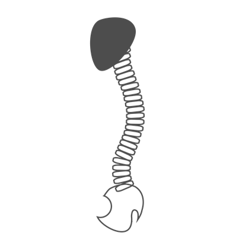
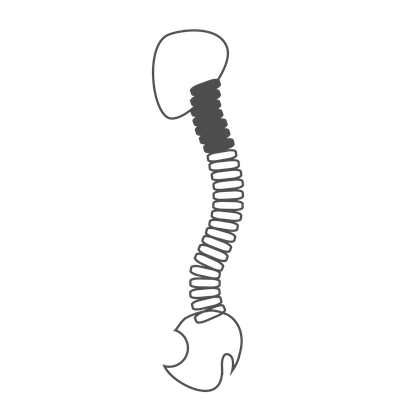
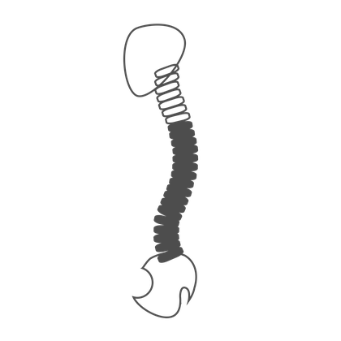
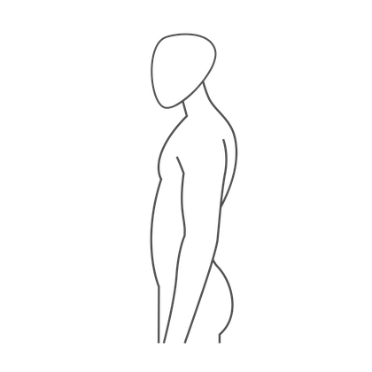
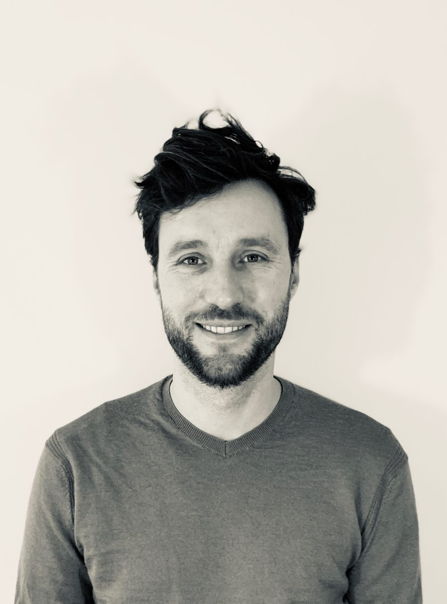

backfysio

Hoofdpijn
klachten
Een zeer veel voorkomende klacht die 9 van de 10 keer uit de nek komt.
Lees meer >
Nekklachten
Klachten in de nek kunnen ook hoofdpijn, schouderpijn en klachten aan de arm geven.
Lees meer >
Rugklachten
Rugpijn kan naast lokaal, snel naar de bil en of heupregio uitstralen. Ook kan het klachten in een of beide benen geven.
Lees meer >
Overige gewricht en spierklachten
Klachten in de schouder zoals een slijmbeursontsteking of een tennisarm in de elleboog kunnen een lokaal probleem zijn, maar soms komt de klacht vanuit de nek. Evenzo kunnen klachten in de lies/heup of het been een lokaal probleem zijn, of vanuit de rug komen.
Lees meer >Behandelmethodes
Fysiotherapie
De algemene kennis van het bewegingsapparaat is het meest belangrijke onderdeel om onderscheid te kunnen maken tussen verschillende klachtenpatronen. Is een klacht lokaal of uit de rug/nek te herleiden?
Lees meer >McKenzie therapie
Een “verkeerde” houding die al zoveel jaar aanwezig is, is niet eenvoudig te veranderen. Houdingsadvies is hierbij belangrijk maar ook heel moeilijk vol te houden. Vanuit de McKenzie wordt er gewerkt met "repeated movements”, oftewel een bepaalde (korte) oefening heel vaak per dag doen. Een zeer effectieve methode om houdingsgerelateerde klachten te verminderen.
Lees meer >Watson Headache Method
De meeste hoofdpijn komt uit de nek volgens Dean Watson. Hij kijkt hierbij voornamelijk naar hoe de bovenste drie wervels ten opzichte van elkaar bewegen. Van hieruit kan de hoofdpijn getriggerd ofwel verminderd worden.
Lees meer >Dry Needling
Dry needling is een methode gebaseerd op triggerpoints. Dit zijn bepaalde punten in de spier waar spanning vaak blijft zitten. Door deze punten met een acupunctuurnaald aan te prikken wek je een reflex op waardoor de spier zich snel weer kan ontspannen.
Lees meerMijn visie
Naar mijn idee wordt er in de huidige maatschappij teveel gebogen en te weinig gestrekt!
Laptop werk, lang op een iPad of telefoon kijken, Netflix op de bank en zelfs een boek lezen of breien, allemaal activiteiten die erg belastend zijn voor de nek en de onderrug. Zo klinkt het in eerste instantie niet, maar een dag "niets doen" is al gauw iets dat de nek en onderrug niet fijn vindt.
Dit resulteert veelal in klachten met hun oorsprong in de nek, zoals hoofdpijn, nekklachten, schouderklachten, duizeligheid of oorsuizen. Vanuit de rug kan dit uitstralen naar de bil, heup, lies of verder het been in tot aan de tenen.
Lees meer >
Over Mij
Ik ben Wonne Back.
Na mijn middelbare school ben ik als lichttechnicus werkzaam geweest in de Melkweg en in de Paradiso, Amsterdam. Na enkele jaren ben ik fysiotherapie gaan studeren en sinds 2010 ben ik aan het werk als fysiotherapeut...
Lees meer >